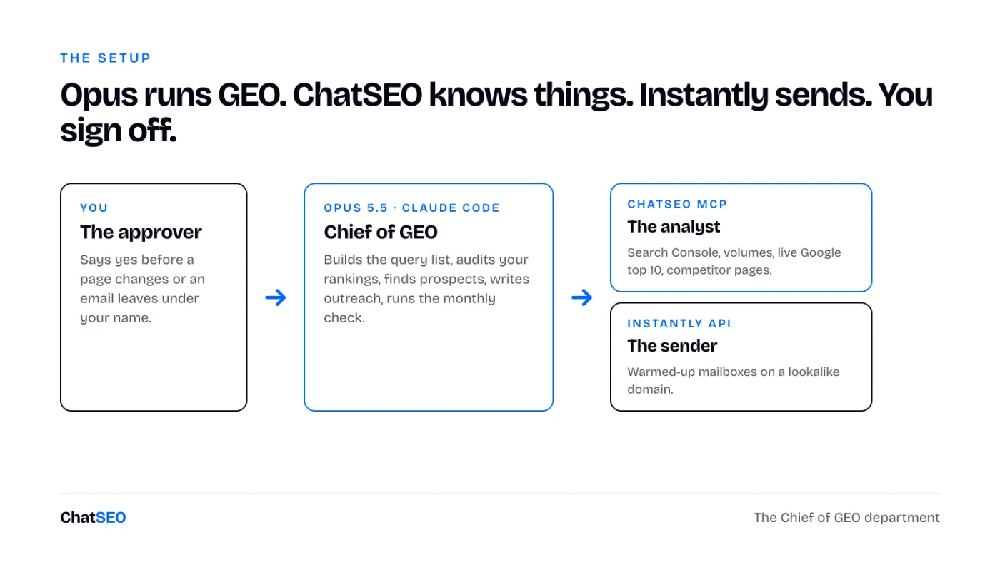
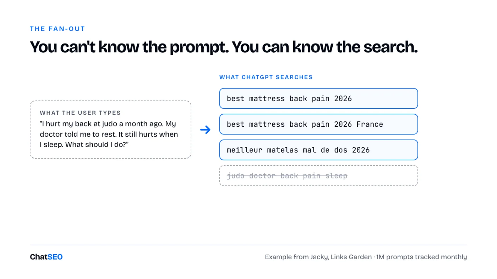
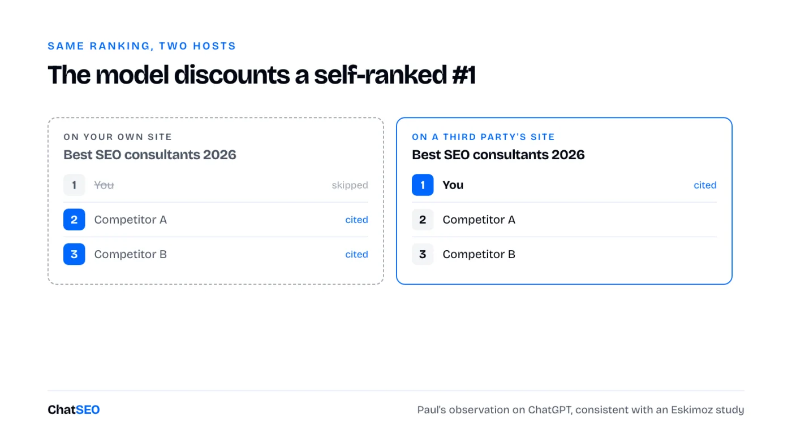
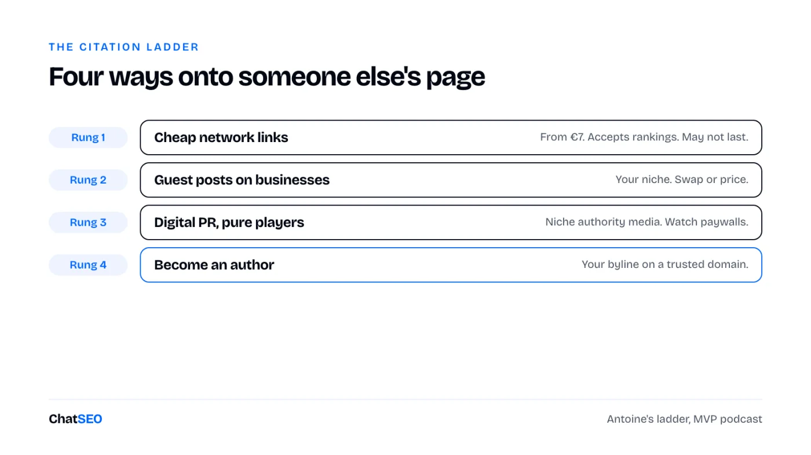
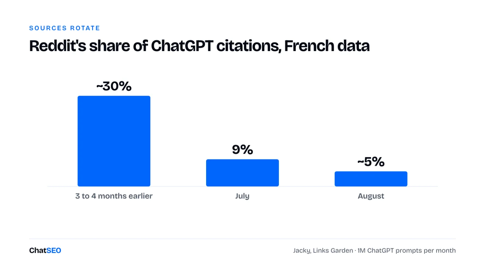
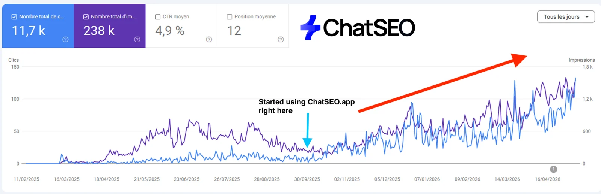

ChatSEO Playbooks / Free, nothing gated
The Claude Chief of GEO
TL;DR
- ChatGPT doesn't search your customer's prompt. It rewrites it into 2 to 5 short Google queries, mostly "best + keyword + year". Target those.
- Ranking yourself 1st on your own site now gets you skipped. A third party ranking you gets you named.
- A €10 to €20 placement gets cited about as long as a €1,000 media mention. The ladder shows where to spend.
- Sources rotate every month. geo-watch keeps you in the rotation.
- Every skill is below, ready to paste into Claude Code. Or download all 9 as a zip.

How ChatGPT decides who to name
Ask ChatGPT who the best SEO consultants in France are. My co-founder Paul is in the answer. The source is not his website.
For years his own site ranked him 1st in his own "best consultants" lists. It worked. Then it quietly stopped. Today ChatGPT cites him through a ranking another company published about him. That shift is the whole of GEO in 2026.
Most GEO advice is guessing, so I went to the people who measure it. Jacky runs Links Garden, a French link-building platform. His team types the same 1 million prompts into ChatGPT every month and has done it for five months: 5 million answers, every brand in them extracted and scored. What that data says:
- Two kinds of answers. With sources, ChatGPT searched the web. Without sources, it answered from training data.
- Training data lags. Roughly a year and a half between the web and the model. A brand launched in January 2026 is not in there. Search is the only way in.
- It searches Google. And what it types tracks Google's rankings closely.
- Sources rotate. One prompt can draw on about 50 sources over time, 10 to 15 per answer, reshuffled every month.
- Authority is not the filter. Jacky found a site with 5 referring domains cited 200 times, and a site with 200 referring domains never cited.
- Sentiment is overrated. The models are consensual. Almost nobody gets described negatively.
→ GEO is not reserved for big domains. It rewards being on the right page, not having the biggest site.
The org chart and the 5-minute setup

- Opus 5.5 in Claude Code is the Chief of GEO. It plans, writes, finds prospects, drafts outreach, runs the routines.
- ChatSEO, through its MCP, is the analyst. Your Search Console, keyword volumes, the live Google results, competitor pages scraped to the source. The MCP is on the Pro plan.
- Instantly is the sender. Warmed-up mailboxes that are not on your main domain.
- You approve. Anything that touches a live page or leaves under your name.
Create a ChatSEO account, add your site, connect Search Console. Then in your terminal:
claude mcp add --transport http chatseo https://api.chatseo.app/mcp
Open Claude Code, switch to Opus with /model, type /mcp to log in once. Each skill below is a file: save it as .claude/skills/<name>/SKILL.md in your repo and Claude Code picks it up. Or unzip all of them at once:
Download the 9 skills (.zip) 6 GEO skills + the 3 they depend on + a README
1Target the query ChatGPT types, not the prompt your customer types
You will never know the prompt. You can know the search behind it.
That's the fan-out. When ChatGPT decides to search, it rewrites the conversation into two to five short Google queries. Jacky's example: someone tells ChatGPT they hurt their back at judo a month ago, saw their doctor, rested, and still hurt when they sleep. ChatGPT doesn't search "judo doctor back pain sleep". It searches "best mattress back pain 2026".

This kills the main objection to GEO. The prompts are different. The fan-outs converge. What they look like, from Jacky's data:
- "Best + money keyword + year + country." The dominant pattern for about a year. Best because the user wants a recommendation, the year because the model wants fresh sources.
- Two languages. A French prompt gets searched in French and in English.
site:on authority domains. The newer pattern. In renewable energy, one to three of the fan-outs now go straight to government sites and Wikipedia.
Antoine (Paul's co-host on the MVP podcast, founder of the agency SEO Monkey) adds the families closest to a purchase: best + your category, reviews + your brand, alternative to + your competitor. So step one is not a prompt list. It's a keyword list, built from your money keywords, in those shapes.
Who ranks top 10 on "best [your money keyword] 2026"? Which of those pages are rankings, listicles or review pages, and does my site appear in them? One table: URL, page type, domain, whether I'm listed and at which position. Never invent a ranking.
--- name: geo-queries description: Build the list of queries AI assistants search for this site. Use when asked about GEO, ChatGPT visibility, AI citations, or which prompts to track. --- 1. Read keywords.md (commercial keywords, from money-keywords). If it does not exist, ask ChatSEO (send_message, siteId), word for word: "List my commercial keyword patterns, with monthly volume." 2. For the top 10 commercial keywords, generate the GEO queries: - "best <keyword> <current year>" - "best <keyword> <current year> <country>" - the same two in English if the site is not English - "<brand> reviews", "<brand> alternative" for us and our top 3 competitors 3. Send ChatSEO, word for word, one keyword at a time: "Who ranks top 10 on <query>? Which of those pages are rankings, listicles or review pages, and does my site appear in them?" 4. Write geo-queries.md: query, the ranking pages in the top 10, whether we are listed, our position in the list, the domain behind it. 5. Never invent a volume or a ranking. Blank beats plausible.
Step 4 becomes the prospect list for everything below. Every listicle that ranks on a fan-out query is a page ChatGPT is likely to read.
2Stop ranking yourself first
Putting yourself 1st in your own ranking was the cheapest GEO trick there was. It's now the cheapest way to get skipped.
Paul did it for years. "Best SEO consultants in Paris", with Paul at number one, on his own site. ChatGPT cited the page, and cited him. Then the source changed. He was still in the answer, but the page cited was now Convertix's ranking, or a ranking he had swapped with someone else.
An infographic from Eskimoz, shared on LinkedIn, put words on it: when a site ranks itself first, the model tends to cite numbers two and three and skip number one. Everyone ranks themselves first. The model has learned that, and discounts it.

What it cost to undo. Paul had Claude rewrite every ranking where he put himself first: his consultant site, its .com twin, and the ChatSEO blog, where we had ranked our own tool first in the "best tools" lists. It worked. It also burned through a day's worth of Claude usage in a few hours. And the last time Claude rewrote those pages, it quietly deleted the ranking tables. No error. That's why the skill below has a diff gate.
Keep it, or remove it. It's a trade-off, not a rule.
- For classic Google, a self-ranked page can still win.
- For GEO, it no longer gets you named.
- For your reader, it costs trust.
- In some niches it's a non-starter. A pharmacy can't rank itself the best pharmacy.
--- name: self-rank-audit description: Find and fix pages where we rank ourselves first. Use when asked to audit rankings, listicles or "best" pages for GEO. --- 1. List every page whose title or H1 contains "best", "top", "ranking" or a year, from the sitemap. 2. For each, record: who is listed 1st, whether it is us, and the page's clicks over the last 90 days (ask ChatSEO for the Search Console data). 3. Pages where we are 1st AND the page gets clicks: do not touch. List them for me with the click count. I decide. 4. Pages where we are 1st and get no clicks: rewrite the ranking on the merits. We may stay in the list, honestly placed, never 1st by default. 5. DIFF GATE. Before saving, list every element in the old version that is missing from the new one: tables, rows, links, images, schema. Show me. Publish nothing without my yes. 6. One page per run. This is expensive in tokens, so never batch the site.
Step 3 is the part that protects your revenue. Never trade a page that sells for a citation you might get.

3Get ranked by others: the swap and the ladder
A ranking on someone else's site is worth more than ten on yours.
You search "best Chinese restaurant Paris". A restaurant saying it's the best convinces nobody. A Paris guide naming it first does. Same for the model, same for referral traffic, same for conversion. It costs about the same time as writing your own. The work is in finding the deals.
The ranking swap
Paul's rankings of agencies get him email. Agencies want in. He asks for no money, just one thing back: a ranking on their own site that lists him, or ChatSEO, first. Convertix is the live example.
- Convertix published: best SEO consultant in France, best GEO tool, best SEO tool, and more recently best AI SEO tool, best SEO MCP and best SEO agent.
- Paul published: best Google Ads agency, best Meta Ads agency, and city versions for the next round.
When Paul tested it live on the Open Source podcast, logged out, ChatGPT named him among the best SEO consultants in France. The source in the citations was Convertix's ranking. Two rules make swaps compound: recency (refresh every year, new year in the title) and volume (Antoine thinks most businesses have at least 20 GEO queries worth a swap).
---
name: swap-ranking
description: Write the ranking we owe a partner in a ranking swap. Use when a swap is agreed, or when asked to publish a "best X" page for a partner.
---
1. Input: the partner, the query they want ("best <their category>
<city or country> <current year>"), and where it goes on our site.
2. Run page-brief on that query. Follow what the top 3 already do.
3. List 5 to 10 real players for the query, partner included, each with
one honest line on who it suits. The partner goes 1st, as agreed.
We never appear in a ranking of our own category.
4. Year and "best" in the title and H1. A short method section saying
how the list was chosen. A date at the top.
5. Ship it through ship-page, diff gate included.
6. Add the page to swaps.md: partner, query, URL, date, and the URL of
their ranking that lists us. geo-watch checks both every month.
Step 6 is what keeps swaps honest on both sides. You'll know the day their page drops you.
The citation ladder
Not every placement is a swap. Antoine sorts the rest into four rungs.

- Rung 1 · Cheap network links. Small SEO blogs, the private blog networks most people are scared of. Antoine's math: if a €7 link from a marketplace like Linkuma holds your GEO query for a month, it paid.
- Rung 2 · Guest posts on businesses. Sites in your niche whose model is selling a product, not visibility. Ask for a swap or a price.
- Rung 3 · Digital PR on pure players. Online-only media with authority in one niche. National press costs more and often refuses anything that says "best".
- Rung 4 · Become an author. Antoine wrote for Les Echos Solutions for a year. You never get "best agency" past an editor, but your byline sits on a domain the model trusts.
The traps: network links may not hold (test one, track the query, decide). Paywalls hide you from bots (check before you pay). Bylines depend on one person: Paul's Journal du Net links stopped the day the editor who approved them left.
The cheap citation is not worse. Jacky sees clients pay €1,000 to €2,000 for a single citation in a big media. It gets cited for one, two, three months, then drops out of the rotation. A €10 to €20 placement does the same thing. His own network sites show up in about 30% of answers. Publisher sites, the "real" ones, also about 30%. In the citation game, the label "PBN" scares people more than it scares the model.
The outreach machine
- Leads. Claude searches "best + your keywords" and lists who already ranks. Then wider: any site in your niche that could host a ranking.
- Mailboxes. Instantly creates them on a lookalike domain, never your main one, and warms them up for about 20 days. Then 5 to 10 emails a day.
- Sequence. One email, a follow-up a few days later, a second follow-up. That's enough.
- Replies. Claude reads them every day and answers.
We run our own cold email exactly like this. Paul's bar: five emails a day, every day.
--- name: citation-outreach description: Turn geo-queries.md into outreach. Use when asked to get listed in rankings, find GEO partners, or run the ranking swap. --- 1. From geo-queries.md, take every ranking page where we are NOT listed. Add sites in our niche that rank on our commercial keywords but host no ranking yet. 2. For each site: find the contact (about page, author box, contact page). Never guess an email address. No contact found = skip. 3. Sort each lead into a rung: network blog, business site, pure-player media, or author opportunity. Different email per rung. 4. Write the email. Short, personal, one concrete offer: - business sites: a swap, we list them in our matching ranking - media: a story or data they can use, never "say we are the best" 5. Write outreach/<date>.csv with: email, first_name, site, ranking_url, rung, personalised first line. 6. Push the CSV to the Instantly campaign through its API, key from the environment, never printed. Max 10 new leads a day per mailbox. 7. Every day: read new replies, classify (yes / question / no / wrong person), draft an answer for each. I approve before anything is sent.
Step 7 is where the deals close. Most swaps die because the yes sat unanswered for a week.
4Be findable everywhere the model reads
Listicles are the core. They're not the whole footprint.
ChatGPT reads Reddit, Wikipedia, YouTube, review platforms and blogs. We learned this by accident: we never ran a link campaign for ChatSEO, and Ahrefs puts it at DR 51. It came from a sponsored article on Medium, a thread on Reddit, and a review of the tool on an authority site. The things a real brand gets. Big brands get GEO for free. Everyone else has to go and fetch, one placement at a time.
Social: your niche picks the network
Reddit's share of citations in Jacky's French data went from about 30% three or four months ago, to 9% in July, to about 5% in August. Whatever is overused gets turned down.

Antoine's rule: use the networks your buyers use, three or four at most.
- Cosmetics, food, lifestyle: Instagram and TikTok.
- Services, B2B: LinkedIn, X, Reddit.
- Software: X, YouTube, GitHub, Reddit.
Run them as a real account, not a parasite. Most posts serve your audience. One in three, or one in five, targets a query the model searches.
Reviews, Wikipedia and the room
- Reviews: one platform, not three. Google Business Profile for local services, Trustpilot for SaaS and e-commerce, Avis Vérifiés for traditional brands in France. Three platforms are three weak profiles instead of one strong one.
- Wikipedia: don't ask. Antoine submitted a request once. Refused, with the moderator's username on the refusal. The way in is enough presence elsewhere that someone else decides you belong there.
- The room. A message to someone you met at an event beats any cold email. Go to the events in your niche with a list of the five sites you want to be ranked on.
Who ranks top 10 on "[brand] reviews", "[brand] alternative" and "[brand]"? List every third-party page and what it says about us: platform, tone in one line, date, and whether it links to us. Then tell me which single review platform ranks first on "[brand] reviews". Never invent a page or a date.
--- name: footprint-audit description: Audit our off-site footprint for GEO. Use when asked where we are visible, which network to pick, or before starting social or reviews. --- 1. Ask ChatSEO, word for word: "Who ranks top 10 on '<brand> reviews', '<brand> alternative' and '<brand>'? List every third-party page and what it says about us." 2. For each page: platform (review site, social, media, blog, forum), tone in one line, date, and whether it links to us. 3. Check which single review platform ranks first on "<brand> reviews". That is the one we push. Count our reviews there. 4. From geo-queries.md, list which platforms appear in the top 10 of our GEO queries. Those are the networks worth posting on. Max 4. 5. Write footprint.md: what exists, what is missing, 5 actions ranked by business value. Nothing gets posted without me.
Step 3 picks your one review platform. Step 4 picks your networks from data, not from a thread on X.
What this page can't do for you. Every skill on this page needs live data: who ranks top 10 on each GEO query today, your Search Console, the pages that mention your brand. A page of instructions can't fetch any of that. ChatSEO does, through the MCP (Pro plan), which is what turns these files into a Chief of GEO that actually runs. The first 7 days are free.
5Watch the rotation, refresh every month
GEO is not a ranking you hold. It's a rotation you stay in.
Sources change monthly. Patterns change too: "best + year" dominated for a year, site: queries on authority domains are rising. The cheap version of watching is a monthly routine.
Who ranks top 10 on "[GEO query]" today? Compare with the list I give you from last month: new listicles, lost listicles, and my position in each. Flag any ranking whose title still carries last year. Never invent a position.
--- name: geo-watch description: Monthly GEO check. Use on the first Monday of the month, or when asked whether we are still cited. --- 1. For each query in geo-queries.md, ask ChatSEO, word for word: "Who ranks top 10 on <query> today?" Compare to last month: new listicles, lost listicles, our position. 2. Fetch every third-party ranking we were listed in. Check we are still there and at which position. Flag removals and drops. 3. Flag rankings whose title still carries last year. Draft a refresh request to the site owner, offering to update our side of the swap. 4. Give me the 10 GEO queries to test by hand this month, in a logged-out ChatGPT window, and a table to note: cited yes or no, which source. 5. Write geo/<month>.md and 5 actions, ranked by business value.
Step 4 stays manual on purpose. Jacky's team scrapes ChatGPT logged out because the API returns different sources than the web app. Ten queries by hand, once a month, is honest data.
Put it on a routine with /schedule in Claude Code and the report waits for you every month.

The 3 dependency skills
Three GEO skills call skills from the Chief of SEO setup. Here they are, so the folder works on its own.
- money-keywords writes the
keywords.mdthat geo-queries starts from. - page-brief builds the brief swap-ranking follows.
- ship-page publishes with the diff gate.
--- name: money-keywords description: Find the commercial keyword patterns for this site. Use when asked which keywords to target, for an SEO strategy, or "where is the money". --- 1. Call ChatSEO list_sites and pick this site's ID. 2. Send ChatSEO (send_message, with the siteId), word for word: "Give me the best SEO strategy for my site. Group the opportunities by keyword pattern, and only keep the ones with commercial intent." 3. Poll get_conversation_messages until the reply is complete. 4. For each pattern, keep only keywords where the current top 3 are landing, service, category or product pages. Drop anything where blog posts dominate. 5. Write keywords.md: pattern, keyword, monthly volume, page type Google ranks, and whether we already have a URL for it. 6. Never invent a volume. If ChatSEO did not return it, write "n/a".
--- name: page-brief description: Build the SEO brief for one target keyword. Use when asked to rank for a keyword, optimise a page, or before creating any new page. --- 1. Send ChatSEO (send_message, siteId), word for word: "I want to rank first on <keyword>. Tell me if I should optimise an existing page or create a new one, then give me the full brief." 2. Poll until complete. From the reply, extract: - create or optimise, and which URL - primary keyword and every secondary keyword - the page type and sections the top 3 all have - the title and meta description ChatSEO proposes 3. If an existing URL already gets clicks or impressions for the keyword, STOP any plan to create a new page. We optimise. 4. Check the title contains the primary keyword, fits the pixel limit without truncating in a SERP preview, and carries the secondary modifiers where they fit. 5. Save the brief to briefs/<keyword-slug>.md. Do not edit the site yet.
--- name: ship-page description: Write or update a page from its brief and publish it safely. Use after page-brief, when asked to build, rewrite or publish a page. --- 1. Read briefs/<keyword-slug>.md. Write or rewrite the page to cover every section the top 3 share, plus one thing they do not have (quiz, calculator, photo + credentials, real case numbers, video). 2. One H1 containing the primary keyword. Title and meta from the brief. 3. Add JSON-LD structured data that fits the page type. 4. Add at least 5 internal links TO this page from the most related existing pages, exact-match anchors, inside body text. 5. DIFF GATE. Before publishing, list every element present in the old version and missing from the new one: tables, rankings, forms, quizzes, embeds, images, internal links. Show me that list. 6. Publish only after I say yes. If ChatSEO wrote the article, push it with publish_artifact_to_wordpress, status "draft" first. Otherwise commit to a branch or save a CMS draft, never straight live.
Where I'm wrong, or at least lucky
- Paul has an SEO audience. Agencies email him to be in his rankings. Most people have to send the first email, and the second, and the third.
- The live test is one query, one session. Jacky's own data says the same prompt rotates through 50 sources. Paul could be missing next week.
- Most numbers here are French data on ChatGPT. Gemini and Claude may weigh things differently.
- The patterns move. "Best + year" is already shifting toward
site:on authority domains. Some of this will age within months.
The part I'm confident generalises: a third party saying you're good beats you saying it. The part I'm not confident generalises: which pages the model reads next quarter.
What I'd do tomorrow
- Run geo-queries on my 10 best commercial keywords and print the list of rankings I'm missing from.
- Run self-rank-audit and fix only the pages that rank me first and sell nothing.
- Offer a ranking swap to every business site on that list, five emails a day.
- Buy one cheap placement on a query I care about and track it for a month.
- Pick one review platform and send every happy customer there.
- Run geo-watch on the first Monday of every month.
In that order, because outreach only works once you know which pages the model reads.